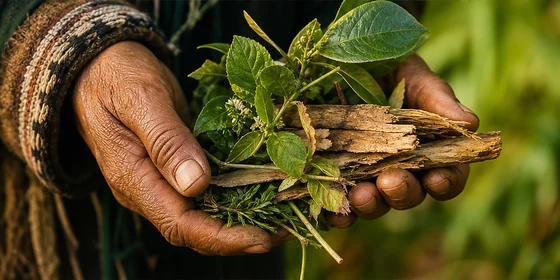

Supporting Your Healing Protocol
How to Prepare Your Body.
What you put in your body matters. So does everything else.
 Prepare the Soil
Prepare the Soil
The Foundation
The plants are ready. The question is, are you?
In the Amazon and Andes, plant medicine has never been just about the plant. The healers we sit with in Ecuador understand something that modern wellness has largely forgotten that the person receiving the medicine is as important as the medicine itself. Before a ceremony, before a protocol, before the first cup is poured, there is preparation. Intention. A clearing of what no longer serves so that what is being offered can actually land.
This page is your preparation. Because your body is a living ecosystem, and the more you tend to it, what you feed it, how you rest it, how you move it, how you speak to it, the more your herbs can do what they came to do.
Think of your herbs as seeds. This page is how you prepare the soil.
Clearing the Way
What to Reduce or Avoid
These are the inputs that work directly against what your herbs are trying to do. You do not have to be perfect. But the more you can reduce these, the more your body can focus on healing instead of managing.
Reduce 01
Processed and packaged foods
Artificial preservatives, dyes, and additives create inflammatory load in the body, the exact environment your herbs are working to clear. If it comes in a box and has ingredients you cannot pronounce, your body is spending energy processing it instead of healing.
Reduce 02
Refined sugar
Sugar feeds inflammation, disrupts hormonal balance, spikes blood sugar, and suppresses immune function. It directly undermines your detox, hormonal, and digestive protocols. This includes sodas, candy, pastries, and most packaged snacks.
Reduce 03
Alcohol
Alcohol taxes the liver, the organ responsible for processing and eliminating the toxins and excess hormones your herbs are mobilizing. Drinking while on a healing protocol is counterproductive. Your liver cannot do two things at once.
Reduce 04
Seed oils
Canola, soybean, sunflower, and vegetable oils are highly inflammatory. Swap them for olive oil, coconut oil, or avocado oil wherever possible.
Reduce 05
Dairy
For many people, dairy creates mucous buildup and contributes to inflammation, particularly problematic when working on respiratory, gut, or hormonal protocols. Consider reducing or eliminating during your healing cycle.
Reduce 06
Gluten
Gluten can increase intestinal permeability, commonly called leaky gut, and trigger systemic inflammation in sensitive individuals. If you are working on gut health or autoimmune conditions, reducing gluten during your protocol is worth trying.
Reduce 07
Caffeine from coffee
If you are on a nervous system, sleep, or hormonal protocol, coffee's acidity and cortisol-spiking effects work against your herbs. Guayusa is your answer: same caffeine, none of the disruption.
Feeding the Work
What to Prioritize
Prioritize 01
Whole, living foods
Fruits, vegetables, legumes, whole grains, and clean proteins give your body the nutrients it needs to rebuild. The more color on your plate, the broader the antioxidant support you are giving your cells.
Prioritize 02
Anti-inflammatory foods
Turmeric, ginger, garlic, leafy greens, berries, and omega-3 rich foods like walnuts and flaxseed work alongside your herbs rather than against them.
Prioritize 03
Fermented foods
Sauerkraut, kimchi, kefir, and natural yogurt support your gut microbiome, the ecosystem that determines how well your body absorbs everything, including your herbs.
Prioritize 04
Fiber
A fiber-rich diet keeps your elimination pathways moving. Your herbs are mobilizing toxins and waste. Fiber helps carry it out. Leafy greens, chia seeds, flaxseed, and legumes are your allies here.
Movement
You do not need an intense training program to support your healing. You need consistency and flow.
Your lymphatic system, one of the primary drainage pathways your herbs work through, has no pump of its own. It moves through muscle contraction and body movement. When you are sedentary, lymphatic fluid stagnates. When you move, it flows.
A 30-minute walk daily does more for your detoxification, circulation, and hormonal health than most people realize. Add gentle yoga, stretching, or swimming if it feels right. The goal is not performance. The goal is flow, keeping your body's internal rivers moving so your herbs have clear pathways to work through.
If you are on the Eliminate & Regenerate or River of Life protocols especially, daily movement is not optional. It is part of the protocol.


Hydration
Water is not optional: it is the vehicle everything else travels in.
Your herbs work by drawing compounds into your bloodstream, mobilizing toxins from deep tissue, and moving waste through your elimination pathways. Without adequate water, that entire process slows down, becomes uncomfortable, and loses effectiveness.
Aim for half your body weight in ounces of water daily as a baseline. During an active detox or cleansing protocol, increase that. Add lemon for liver support, Camu Camu for Vitamin C and iron absorption, or a pinch of sea salt for electrolyte balance.
Herbal teas count toward your daily intake. Coffee and alcohol do not.
Sleep
Your body does not heal while you are busy. It heals while you rest.
Most cellular repair, hormonal regulation, immune rebuilding, and detoxification happen during deep sleep. If you are shortchanging your rest, your herbs can only do a fraction of what they are capable of. Aim for 7 to 9 hours. Take your evening herbs, Valerian Root, Scales of Balance, Sacred Sacral, before bed and let the plants support what your body is designed to do in the dark.
Create a wind-down ritual. Dim the lights. Put the screens away. Drink your evening cup with intention. Sleep is not passive. It is when the real work happens.


Stress
Chronic stress is one of the most powerful disruptors of healing. It elevates cortisol, suppresses immune function, disrupts hormonal balance, slows digestion, and keeps your nervous system in a state that makes deep restoration nearly impossible.
You do not have to eliminate stress. But you do have to create space away from it, daily. Even 10 minutes of stillness, breathwork, time in nature, or quiet prayer changes your body's chemistry in ways that directly support your herbs' work.
If stress is a significant factor in your health picture, Scales of Balance, Restoring Order, and Chuchuhuasi are your closest allies in this catalog.

Breath
The Inner Ground
Mindset
This one does not get talked about enough in wellness spaces, but it matters more than most people are willing to admit.
The way you approach your healing protocol changes the outcome. Coming to your herbs with skepticism, inconsistency, or the quiet belief that nothing will work for you creates exactly that environment in your body. Coming with intention, patience, and genuine trust in your body's ability to restore itself creates a very different one.
Your body is not fighting you. It is communicating with you. Symptoms are not failure, they are information. Healing is not linear, it is a spiral. Some days will feel like progress and others will feel like a step back. Both are part of the process.
Be patient with yourself. Stay consistent even when you do not feel immediate results. Give your body the time it is asking for.
Intention & Ceremony
The healers we sit with in Ecuador do not approach plants casually. Before they harvest, they ask. Before they brew, they give thanks. Before they drink, they set an intention: a clear, conscious statement of what they are asking the plant to help them with.
This is not superstition. It is a technology of attention. Where your focus goes, your body follows. When you drink your herbs with a clear intention, I am supporting my womb, I am clearing what no longer serves me, I am rebuilding my strength, you are not just taking a supplement. You are entering into a relationship with a living being that has been doing this work for centuries.
You do not have to perform a ceremony. But you can bring ceremony to your cup. Light a candle. Sit in stillness for a moment before you drink. Hold the mug with both hands. Breathe. Ask. Receive.
The plants will meet you there.
Go Deeper
Take It Further With Our Digital Bundle
Your herbs work best when your whole lifestyle supports them. Our digital bundle brings together all of our plant-based ebooks and detox guides in one place: everything you need to nourish your body, support your protocol, and build a lifestyle that makes your healing last long after the last cup is brewed.
Bringing It All Together
Bringing It All Together
Healing is not one thing. It is not one herb, one diet change, one good night of sleep, or one moment of stillness. It is the accumulation of small, consistent, intentional choices made in the direction of your wellbeing, day after day, cup after cup.
The herbs in our Kawsaypac line were chosen, harvested, and prepared by people who understand that the body and the earth are in constant conversation. Your job is to make sure your body is listening.
Tend the soil. The seeds will do the rest.
Questions, Answered
Frequently Asked Questions
How long before starting my herbs should I begin preparing my body?
Ideally, begin reducing processed foods, alcohol, and sugar at 7 days before starting your herbal protocol. If you are beginning a full kit like the Eliminate & Regenerate, we recommend completing a colon prep with Final Flush first, which naturally gives your body a 7-day preparation window. The longer you prepare, the more receptive your body will be when the herbs begin their work.
Do I have to follow all of this perfectly to see results?
No. Perfection is not the goal, direction is. Even making two or three of these changes consistently will create a meaningfully different environment for your herbs to work in. Start where you are. Do what you can. Your body will respond to every step you take toward it.
Can I do this protocol if I have a chronic illness or am on medication?
Many of our customers manage chronic conditions and have found significant support through our herbs. However, several herbs in our catalog interact with specific medications, particularly blood thinners, immunosuppressants, blood pressure medication, and hormonal treatments. Always consult your healthcare provider before beginning any herbal protocol alongside prescription medication.
What if I slip up and eat something I shouldn't during my protocol?
You continue. One meal, one day, one decision does not undo a protocol. What matters is the pattern over time, not the individual moment. Acknowledge it, hydrate well, and come back to your herbs and your intentions the next morning. Your body is far more resilient than you give it credit for.
Is this suitable for vegetarians and vegans?
Yes. Every herb and blend in our catalog is 100% plant-based. The dietary recommendations on this page are also entirely compatible with vegetarian and vegan lifestyles. For clean protein, prioritize legumes, tempeh, quinoa, hemp seeds, and spirulina alongside your daily Guayusa brew for its complete amino acid profile.
How do I know if my body is ready to start the herbs?
Your body is ready when you are consistent enough to take them daily, hydrated enough to support the process, and open enough to give it time. You do not need to have your diet perfect or your life in complete order. You just need to begin with intention, with water, and with the willingness to meet the plants halfway.